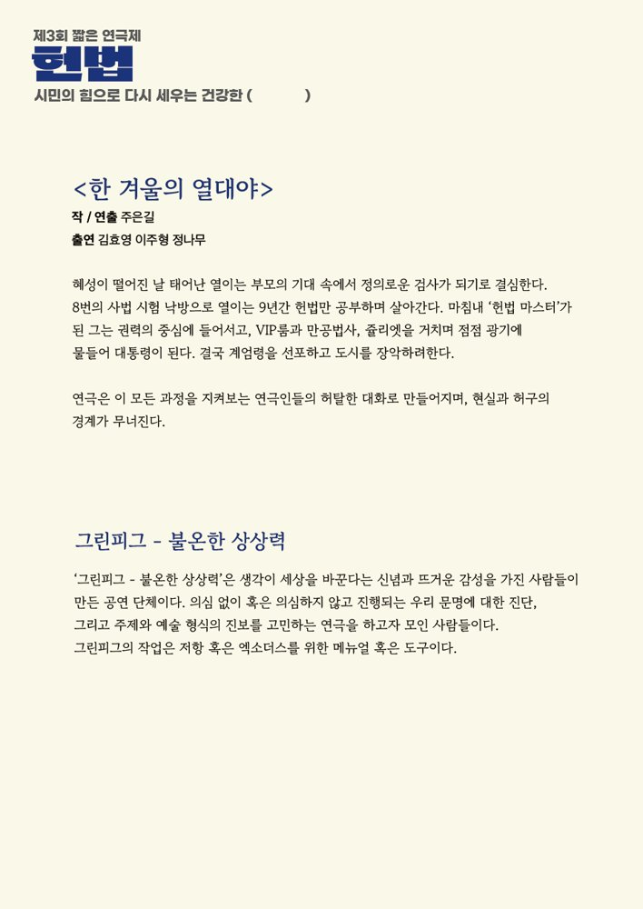

2024년 12월 비상계엄 이후, 그 주동자들의 이야기를 해야 한다는 생각에서 출발한 작품. 악인들을 악마로 거칠게 그리기도, 삼류 코미디언처럼 우스꽝스럽게 그리기도 하며 잊어선 안 될 역사를 연극으로 기록하려 했다.
혜성이 떨어진 날 태어난 열이는 부모의 기대 속에서 정의로운 검사가 되기로 결심한다. 여덟 번의 사법시험 낙방 끝에 9년간 헌법만 공부하며 '헌법 마스터'가 된 그는 권력의 중심에 들어서고, VIP룸과 만공법사, 쥴리엣을 거치며 점점 광기에 물들어 대통령이 된다. 결국 계엄령을 선포하고 도시를 장악하려 한다. 연극은 이 모든 과정을 지켜보는 연극인들의 허탈한 대화로 만들어지며, 현실과 허구의 경계가 무너진다.
2025.5.16–18 / 노무현시민센터 - 제3회 짧은 연극제 '헌법'
이전: 바보런하기-벚꽃동산 | 다음: 초록이가 거짓말을 하면 우린 모두 박수를 치는 거야
아카이브로 돌아가기 | 아무 작품이나
발행일 2026.11.13